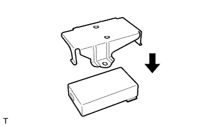
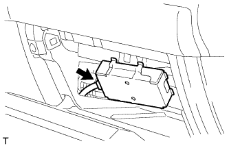
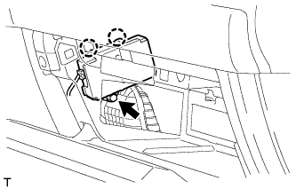

MAYDAY BATTERY > INSTALLATION |
| 1. INSTALL MAYDAY BATTERY |
|  |
Install the bracket to the mayday battery.
| 2. INSTALL MAYDAY BATTERY WITH BRACKET |
|  |
Connect the connector.
|  |
Attach the 2 claws and install the mayday battery with bracket with the bolt.
Attach the 4 claws to install the cover.
| 3. CONNECT CABLE TO NEGATIVE BATTERY TERMINAL |
| 4. CHECK SRS WARNING LIGHT |
Check the SRS warning light (Click here).
| 5. PERFORM REGISTRATION |
Perform registration (Click here).